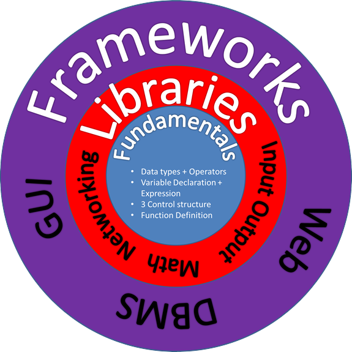
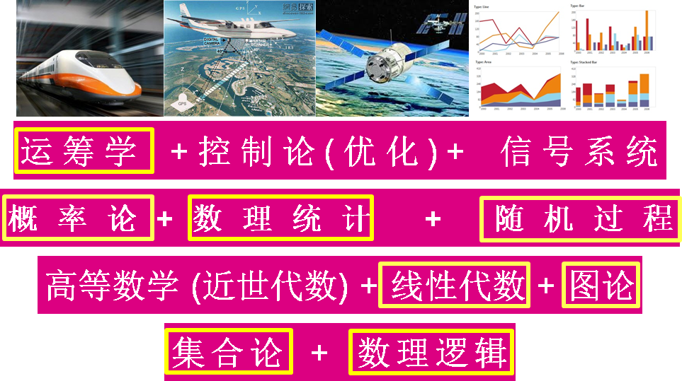
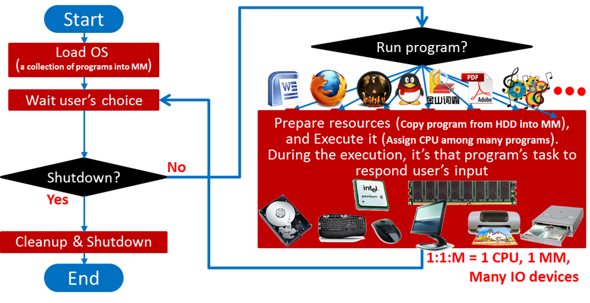
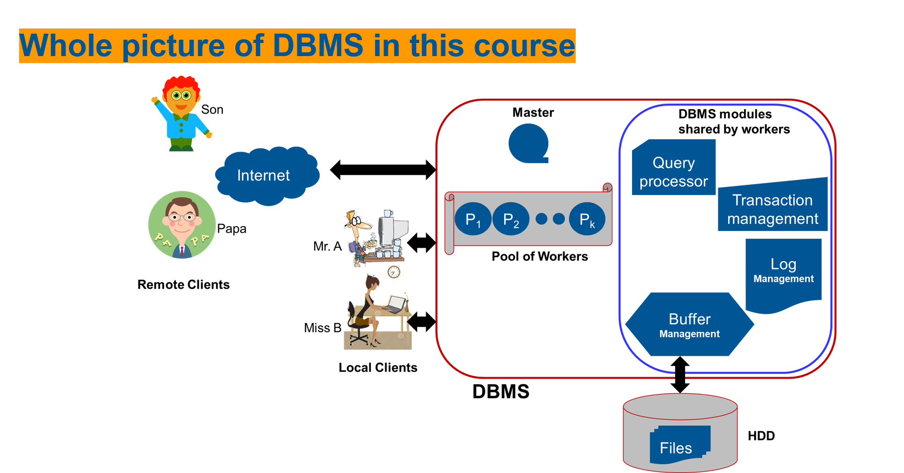
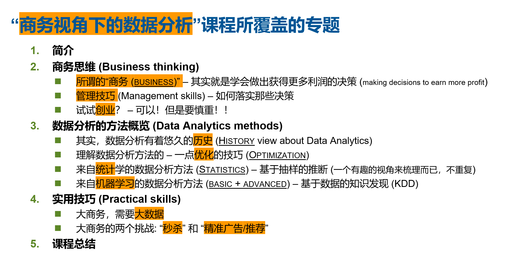
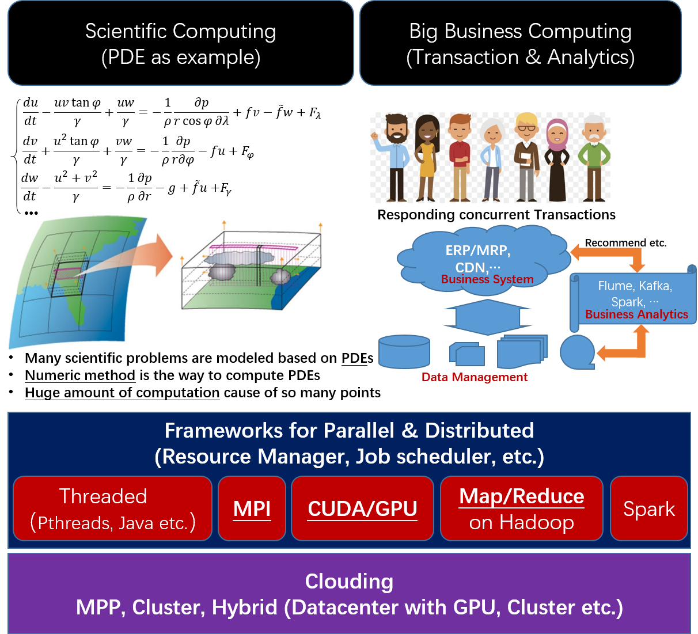

投身于追寻更深智慧的伟大旅程吧！
之所以从教，是因为自己真的很喜欢教学，因为，教学真的是一种提升自己认知的重要途径！在教学中，我遵循如下的经验或规则:
— 总是以Big picture 的方式梳理课程相关的理论和实践.
— 讲解形式总是以直观的例子来阐释 (个人体会：理论之所以复杂、难学，很大程度上是因为没有直观的例子理解).
— 一定要将现实(最新的成就)照进课程.
此网站汇总了自己教学的一些课程，就算是对自己为之付出的努力的纪念吧.
| 课程名 | 课程描述 | 示意图 |
|---|---|---|
| A First Course for Computer Science (计算机科学概览) |
在中国，如何帮助大多数计算机专业新生成功地跨入计算机哲学(也称之为计算思维)，对于他们而言是非常重要的. 本课程的目的便在于此。借助一个简单的知识框架(右图)，本课程尝试将以一种直观和有效的方式计算机专业的相关概念和技能介绍给新同学. |
 |
| An Intuitive Study for Mathematics (工程数学概览) | 数学，对于理工科的学生而言，其重要性无需赘言。本课程以一种直观的方式阐述所谓的工程数学的内容：专注于"思想"的阐释，而不再采取"枯燥的数学推导"的方式。 |  |
| Operating System (操作系统极简概念书) |
作为计算机专业的核心内容之一，有着众多的操作系统课程。本课程在阐述经典专题之余，尝试将一些新的进展纳入到本课程中，涵盖 HPC, Big Data and Deep Learning 等。 课程的主要内容分为两部分:
|
 |
| Design and Implementation of DBMS - Taking RDBMS as the instance (数据库的设计与实现书) |
作为计算机专业核心软件之一(另两个是 Compiler 和 OS), 数据库管理系统也自然是计算机专业的核心课程。本课程在阐述经典专题之余，尝试将一些新的进展纳入到本课程中，涵盖 Big Data 和大规模数据计算等。 课程的主要内容分为两部分:
|
 |
| Data Analytics under the Business View (商务视角下的数据分析) |
随着 Deep Learning 的夺目表现, AI(Artifacial Intelligence), ML (Machine Learning) 和 Deep Learning 等课程在近些年再次日益变得火热起来。 本课程尝试以一种有趣的方式(商务思维)将相关的内容有机地整合起来，帮助学生有一个较为完整的认知. 为此，该课程有如下的专题:
|
 |
| Large Scale Data Computing - HPC, Big Data, Deep Learning and beyond (大规模计算) |
某种角度而言，人类的历史也就是努力追寻更强有力的智慧的过程。 自从计算机出现后，为获得更强大的算力而涌现出许多不同的计算结构，例如那些汇总至 HPC 和 Big Data 等领域的经验总结。到目前，这类技术也已经成为互联网技术的主要支撑，也因此，完整地了解相关的概念和技术，对于计算机专业的学生而言就成为必要！ 为此，该课程有如下的专题:
|
 |